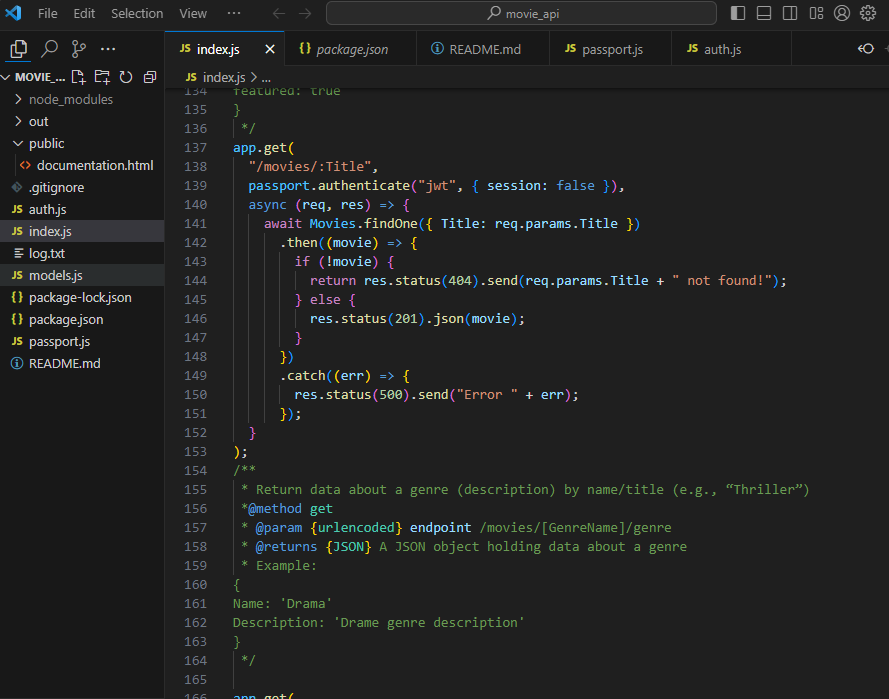
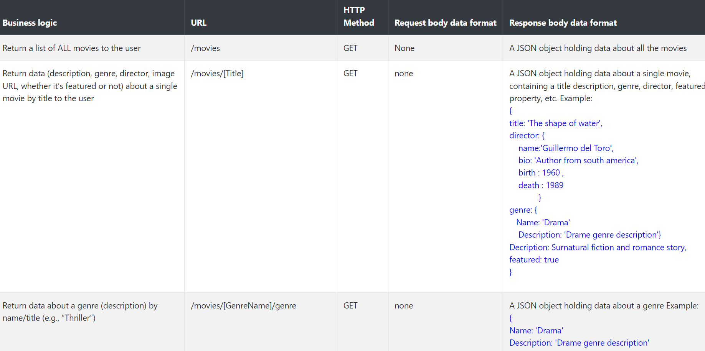

MyPrime project case study
Problem:
How could people have access to detailed information of movies they are interested in and select which movie they like?
Goal:
Create a full stack of a movie application (front end and back end) that will allow users to have detailed information on movies, create an account and store their favorite movies. This project was created as a part of CareerFoundry’s Web development program.
Role:
Web Developer
Duration:
7 weeks
Tools:
MongoDB, Express, React, Nodejs, Boostrap, Heroku, Mongoose, Redux, Netlify, Postman
Building process
Solution Architecture
The first step was to analyze the requirements to identify all the key features of my application. Based on the key features, I was therefore able to define the web application architecture. This step helped me to identify what to include at Client level (views), Server level (server type and API endpoints), Business logic (models) and finally the Data layer (Database type).
Server side - API
After defining the architecture, I started working on the API to make sure that I will have all the endpoints. I chose to dive on the API first because the type of data available could impact the rendering of the front-end part of the application. The API was built using Node.JS and Express.
After building the API, I then created mock data and tested my API endpoints using POSTMAN to send requests and analyze the results.
Client side
With the API ready, I decided to dive on the frontend side of the application. I chose the frontend before the database because with the mock data, it will be easier to change the data structure than modifying the real database architecture in case I faced any technical constraint. The first step in the front end was to define in detail which feature will go in which view (home screen, movie view, user profile view, favorite movie view, etc) and then to build each view separately for easy testing. After that I integrated all the views together. The frontend was built with React and Redux. To distinguish my application with the existing solutions, I made two major design choices:
- Combine the “Add favorite” and “Remove favorite” button in one, so that the users can directly know if a movie is already in his favorite.
- Add the “favorite movie” view directly in the “user profile” view to reduce the number of pages and simplify navigation for the users.
Server side: Database
The database was quite straightforward to build, I chose to go for a non relational database because it is the best choice to store and organize various types of dataset side by side, this flexibility compared to relational databases was perfect for the type of information to store for this project. MongoDB was the one. Here I also chose to hash users’ password for better security.
Hosting
The last step (and not the least) was to host each side of the application online so that it can be accessible from everywhere. Netlify was chosen for the front end, Heroku for the API, and Mongoose for the database.
Collaboration and documentation
It is important to mention that project documentation was generated for the API during the development process to ensure proper use by other potential developers.
Challenges
My main challenge was to add the login feature using Express and Nodejs, it took me several hours to understand how they work. After one session with my mentor and reading the documentation he provided to me, I was finally able to solve this issue.
Retrospective:
The goal of this project was to build from scratch the front-end and back-end parts of an application. I enjoyed building the API as well connecting it to the database. This project helped me to master the full stack development process and gave me a good overview of relational and non-relational databases. I really enjoyed working with React.
Future improvements
- Add a notify user feature that send an email to the user when a movie is added to the database
- Add a featured section to display recently added/featured movies